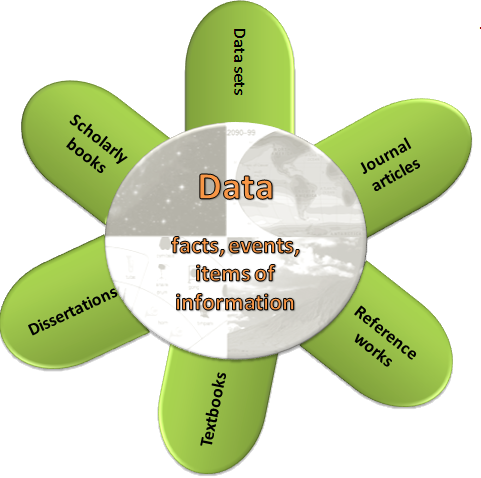
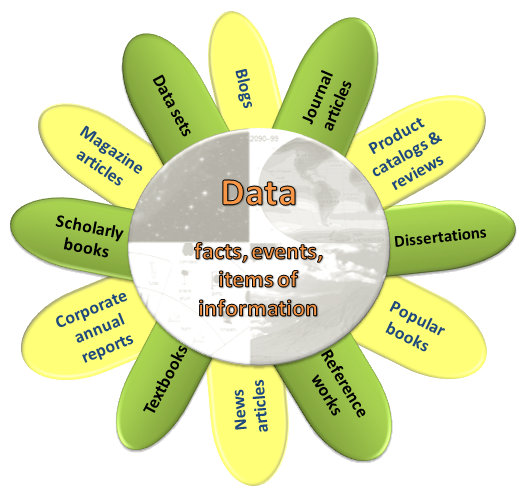

Introduction
The modules in this tutorial will put you on the right track when you research information for your projects. This tutorial will also satisfy your General Education Research Skills requirement.
This tutorial consists of five modules. It is best to view the modules in the order they appear, but you do not have to do all of them at one time. When navigating within the tutorial, use the navigation controls provided - do not use the "back" button in your browser.
For the most interactive experience, the tutorial is best viewed on a laptop or desktop computer using Chrome, Safari or Firefox browsers, but it can be viewed on mobile devices. Functionality is limited in Internet Explorer.
Each module is followed by a required quiz. More details will appear before you begin each quiz.
The tutorial content and code is available on GitHub under a Creative Commons license as an open source project.
Introduction video
You may now move to the next module.
In this module, you'll be introduced to types of information sources, both popular and scholarly.
You'll also learn about the information process.
Research starts with a question
For each project, ask yourself:
- What do I want to know?
- What is the information I need to find to answer my question?
Types of projects
Some of your projects at Menlo might include:
(hover or tap images to reveal)
 Doing market research on a product or company
Doing market research on a product or company Finding scholarly articles for a psychology assignment
Finding scholarly articles for a psychology assignment Writing a paper about an ancient civilization
Writing a paper about an ancient civilization Researching a controversial issue for a debate
Researching a controversial issue for a debate Creating a business plan
Creating a business plan
Types of information sources

In order to determine which sources are most authoritative and will best meet your needs for a particular project, you have to understand something about the types of information sources that exist.
Types of information sources

- Some sources you'll use to answer research questions might be:
- data and statistics
- magazine, newspaper, and journal articles
- books
- You'll use information sources in print and online formats.
Types of information sources
- You'll use both popular and scholarly sources, depending on the project.
- Popular sources are written for a general audience. Scholarly sources are written for an academic audience. You'll hear about these sources in more detail later.
- Each type of information source is the product of a process involving varying amounts of research, writing, and review.
- Let's take a closer look, beginning with data and statistics.

Data and statistics

- Data interpretation and analysis lead to the creation of information and knowledge.
- Data collection can take minutes (such as weather data) or years (such as census data).
- Data are multidisciplinary; the same set of data can be used by researchers in many different fields.
- Data can be in either numeric or non-numeric form. For example, statistics about traffic patterns are numeric data, while videos of runners at the finish line of a race are non-numeric data.
- Knowing how to find and make use of data will be a valuable skill long after you graduate.
Popular sources
Here, the word "popular" is used to describe something that is intended for use by the general public.
Popular information sources:
- May be online, in print, or both.
- Include some books, as well as magazines, newspapers, blogs, web sites, product catalogs and reviews, and company annual reports.
- Are published on a daily, weekly, or monthly basis and can take anywhere from a day (newspapers) to months (in-depth magazine articles) to produce.
- Are written by paid journalists or authors who may not have scholarly expertise.
- May report on current trends and events as well as research from scholarly sources.
- Often do not include bibliographies or lists of sources.
- May be reviewed by editors or may be self-published.
- Are selected by librarians for the Library's collection based on subjects that students and faculty research here at Menlo.
Scholarly/academic sources
- Scholarly sources are also called academic, peer-reviewed, or refereed sources.
- Scholarly sources can take months or years to produce and publish because of the research and review process that goes into creating them.
- Let's take a look at this research and review process.
The scholarly research and review process
(hover or tap images to reveal)
 Researchers identify a question or topic in need of further investigation.
Researchers identify a question or topic in need of further investigation.- Researchers conduct research or experiments, then write about their findings.
- Researchers submit the article to a peer-reviewed journal or, if it's a book, to an academic press or publisher.
- The article or book is reviewed by other experts (the researchers' peers) in the same field as the researcher.
- Peer-reviewers may suggest or require changes, or they may reject the work entirely.
- Researchers make changes based on the reviewers' comments.
- The article or book is published in print and/or digital formats.
- Librarians review, select, and subscribe to books, print journals, and online databases containing these scholarly works to support courses and research at Menlo. Access is provided through the Library's web site.
Textbooks and reference works
- Compile and synthesize the most important information about a subject from other scholarly sources
- Provide an overview of essential knowledge on a subject
- May be general (World Encyclopedia) or subject specific (Dictionary of Psychology)
Textbooks and reference works

- Are an excellent place to begin your research
- Are not intended to be read cover to cover
- Provide background, main concepts, and organization of a topic
- Provide the important vocabulary and terms you'll use when you begin to search for more information
- Can be in print or online
Wikipedia: Is it scholarly?
- You're familiar with Wikipedia, but it is not an academic source.
- Entries in Wikipedia are created by many contributors, many of whom are not experts.
- Information in Wikipedia is sometimes inaccurate or incomplete.
- But before disregarding Wikipedia, consider how it can be useful:
- Offers an overview of an unfamiliar topic
- Provides useful keywords or search terms
- Might include a bibliography with sources that you can use to find more information
Scholarly vs. popular sources
Click or tap questions to reveal the answers.
Scholarly Resources: What's the difference
| Question |
Scholarly |
Popular |
| What's in them? |
Articles presenting original research related to a specific discipline © University of Illinois Press © University of Illinois Press
|
Articles about current events and popular culture, opinion pieces, fiction, self-help tips ©Sussex Publishers ©Sussex Publishers
|
| Who writes them? |
Professors, researchers, or professionals; credentials are usually stated in article ©Blackwell Publishing ©Blackwell Publishing
|
Staff writers or free-lancers; names or credentials often not stated ©Rolling Stone LLC ©Rolling Stone LLC
|
| Who reads them? |
Scholars (professors, researchers, students) knowledgeable about a specific discipline ©Harvard Business Review ©Harvard Business Review
|
General public ©McGraw-Hill ©McGraw-Hill
|
| What do they look like? |
Mostly text supported by black and white figures, graphs, tables, or charts;
few advertisements Reprinted from The Lancet
V364(9440), © 2004
with permission from Elsevier. Reprinted from The Lancet
V364(9440), © 2004
with permission from Elsevier. |
Glossy, color photographs, easy-to-read layout,
plenty of advertising ©Health Magazine ©Health Magazine |
| What are their advantages? |
- Articles are usually critically evaluated by experts (peer-reviewed) before they can be published
- Footnotes or bibliographies support research and point to further research on a topic
- Authors describe methodology and supply data used to support research results
|
- Written for non-specialists
- Timely coverage of popular topics and current events
- Provide broad overview of topics
- Good source for topics related to popular culture
|
| What are their disadvantages? |
- Articles often use technical jargon and can be difficult for non-specialists to read
- Scholarly journals are expensive and may not be as readily available
- Research and review process take time; not as useful for current events or popular culture
|
- Articles are selected by editors who may know very little about a topic
- Authors usually do not cite sources
- Published to make a profit; the line between informing and selling may be blurred
|
|
Adapted from Tutorial for Info Power (TIP), University of Wyoming, available at http://tip.uwyo.edu/categories.html
|
Overview of the information process
Although the various types of information sources are different in several ways, they also have something in common:
the use of data. Data are the building blocks of information and include much more than numbers. Data include facts, events, and items of information presented in visible form.
| Source Type |
Source Visualization |
| Popular |
 |
| Scholarly |
 |
| Scholarly & Popular |
 |
-
Popular sources (yellow petals):
Researchers and writers of popular sources such as news articles, blogs, and books often include data, facts, and details of events in their work.
-
Scholarly sources (green petals):
Just as data form the basis for popular information sources, data play an even larger role in scholarly work. Scholarly information sources include things like journal articles,
scholarly books, data sets, dissertations, textbooks, and reference works.
-
Scholarly & popular sources:
We've talked about the research process from data to published work.
But where do YOU fit in?
Where YOU fit in the process

- Understanding the differences between information types will help you decide which sources to use for your projects.
- This knowledge will also help you decide where to search.
Recap of what you've learned
Now that you've completed this module, you should be able to:
- Recognize the central role of data in the information process
- Identify characteristics of popular and scholarly information sources
- Understand the scholarly research and review process
Test your knowledge in the quiz on the next page. In the next module, we'll discuss the process of searching for information.
Module 1 Quiz
In order to complete this module and get credit, you must take this quiz and submit your results. A passing score is 70%. You may retake the quiz if your score is lower than that.
In Module 1 you learned about types of information sources; now it’s time to start using some of them.
In this module, you’ll learn how to search library resources effectively.
How to begin a successful search
(hover or tap images to reveal)
 Carefully read your assignment and be sure you understand it
Carefully read your assignment and be sure you understand it Identify the key words or concepts
Identify the key words or concepts Find synonyms for the main terms
Find synonyms for the main terms Document your search by keeping a list of all search terms
Document your search by keeping a list of all search terms
Try it!
In a class or in the work world, you may have a project like the one listed below.
Project: You work in the marketing field. You have a client who is investigating launching a new green product and is interested in the characteristics of consumers who use such products. Choose search terms to suit each category. You must pick 3 valid search terms for each one. Remember that there may be other good search terms that we haven’t listed here.
Brainstorm a concept map
- Sometimes a visual or concept map can also help you brainstorm search terms.
- Additionally, it might help you develop an outline for your project.
Here’s a sample concept map for a psychology project on the psychological causes and effects of bullying among adolescents.

Once you’ve considered the search terms you’ll use, you’re ready to try them out in a search. But where will you start?
Web searching
Your first stop might be Google, and you might have some success there, but remember…

You’ll get millions of results to sort through, many of which will not be helpful.
Going beyond Google
Google sometimes is the fastest, easiest way to the information you need – think about movie listings or sports scores – but it might not meet your needs for academic projects.

- There are ways you can use Google successfully in your academic work, such as Google Scholar, and we’ll discuss that in the next module.
- But if not Google, where should you start your search?
Using library resources
The place to start your search is the Library’s web site (http://www.menlo.edu/library). You’ll find thousands of online and print resources that have been selected by the Menlo librarians to support your courses and assignments.

You won’t find most of our resources on Google or the web because our subscriptions are available only to the Menlo community.
When you need books and e-books, you can find them in our catalog; when you need articles, you can find them in our databases.
And when you need to know if the Library subscribes to a particular magazine, journal, or newspaper, you can use the Journal Finder to search by title. It will tell you if the publication is available on our shelves or in our databases.
What is a database?

- You’ll hear the word “database” a lot when using library resources, so let’s be sure you know what they are.
- Databases are searchable collections of information. You already use them when you search for songs in iTunes, for friends in Facebook, and for books in Amazon.
- Most databases rely on similar methods of searching, so while the databases themselves may look different, once you have mastered one, it’s much easier to learn how to search others.
Library catalog
The Library catalog is one
database you’ll be using. It’s
the place to find print books,
e-books, DVDs, and CDs.

- You won’t find individual articles here, however. You’ll have to search one of the Library’s subscription databases for those.
- Let’s take a look at how to search the Bowman Library catalog.
Searching the catalog video
Recap of what you've learned
Now that you’ve completed this module, you should be able to:
- Design a search based on the requirements of your project
- Identify relevant search terms
- Understand the function of databases
- Use the library catalog
Test your knowledge in the quiz on the next page. In the next module, we’ll continue to focus on searching and look at the Library’s article databases.
Module 2 Quiz
In order to complete this module and get credit, you must take this quiz and submit your results. A passing score is 70%. You may retake the quiz if your score is lower than that.
In the previous module on searching, we discussed using the library catalog when you need books.
In this module, we’ll talk about the times when you’ll need articles from periodicals (magazines, journals, newspapers). That’s when you’ll want to turn to the Library’s databases.
Library databases
What you'll find in the library databases:
(hover or tap images to reveal)
 Journal, magazine, and newspaper articles, both current and past
Journal, magazine, and newspaper articles, both current and past Articles from encyclopedias and other reference works, both scholarly and popular
Articles from encyclopedias and other reference works, both scholarly and popular Country demographics
Country demographics Company reports
Company reports Financial/stock data
Financial/stock data
Library databases

On the Library’s web site you’ll find an alphabetical list of all our databases, as well as lists of databases by subject.
We also have lists of the databases most useful for specific courses. Look for the links to Course Research Pages and Subject Research Guides on the Library’s home page.
Library databases
If you’re not sure where to begin your search, you can always ask a librarian, in person or by phone. We’re here every hour that the Library is open and we’re here to help!

You can access the library databases 24/7 with your library barcode.
Try it!

Individual library databases might focus on only one subject, such as psychology or business, or might contain articles from many disciplines. Choose the best database from the pull-down menus for each topic listed below.
Advanced search techniques
- Scholarly databases like the ones the Library subscribes to are more complicated to use than search engines like Google and Yahoo because they offer sophisticated tools and techniques for searching that can improve your results.
- Many databases, including the library catalog, offer tools to help you narrow or expand your search. Take advantage of these.
- The most common tools are:
- Boolean searching
- Truncation
Boolean searching
Boolean searching allows you to use AND, OR, and NOT to combine your search terms. Click each example to see how to limit or expand your search results.
Boolean search results
| Search Type |
Results |
| Boolean Used
Search Terms
|
Boolean searching uses AND, OR, and NOT when combining your search terms. Click each example to see how to limit or expand your search results.
|
| AND
"Endangered Species" AND "Global Warming"
|
When you combine search terms with AND, you’ll get results in which BOTH terms are present. Using AND limits the number of results because all search terms must appear in your results.

"Endangered Species" AND "Global Warming"
|
| OR
"Arizona Prisons" OR "Rhode Island Prisons"
|
When you use OR, you’ll get results with EITHER search term. Using OR increases the number of results because either search term can appear in your results.

"Arizona Prisons" OR "Rhode Island Prisons"
|
| OR
"Corn Ethanol" OR "Corn Fuel"
|
When using OR to join terms, note that there could be some results in which both terms appear.

"Corn Ethanol" OR "Corn Fuel"
|
| NOT
"Miami Dolphins" NOT "Football"
|
When you use NOT, you’ll get results that exclude a search term. Using NOT limits the number of results.

"Miami Dolphins" NOT "Football"
|
|
Adapted from University of California Libraries Begin Research Tutorial
|
Truncation
- Truncation allows you to search different forms of the same word at the same time.
- Use the root of a word and add an asterisk (*) as a substitute for the word’s ending. Show me.
-
- psychology
- psychological
- psychologist
- psychosis
- psychoanalyst
Psycho*
- Truncation can save time and increase your search to include related words.
- Now let’s take a look at these tools in action.
Adapted from University of California Libraries Begin Research Tutorial
Searching a library database video
Google Scholar

In the last module, we promised to show you how you can use Google for academic research. We recommend that you use Google Scholar, which you'll find in the Library’s list of databases.
Google Scholar uses much the same interface as Google but includes journal articles, books, and reports from academic publishers, professional societies, online repositories, and universities - exactly the kinds of scholarly sources your professors will often want you to use.
Google Scholar
While you won’t always find full text in Google Scholar, you can find the citation of an article. The citation gives you the title, author, journal title, date, and page numbers.

You’ll notice in the image above that no full text is available for the third article. But you can click the link and find the citation of the article, which is shown below.

Finding the full text of an article when you have only a citation
- If you have only the citation to an article, you can use the journal title from the citation in the Library’s Journal Finder to see if the Library provides access to the article you need.
- Having only a citation for an article isn’t a dead end. It contains all the information you’ll need to find the full text.
- Let us show you some ways to get the article you want.
Using the Journal Finder video
Using databases after college
You’ll continue to use databases after you leave Menlo. Becoming an expert at using them now will give you a leg up later on.
(hover or tap images to reveal)
 Your job or company may subscribe to them – perhaps LexisNexis in the legal field, Hoover’s or Mergent for business.
Your job or company may subscribe to them – perhaps LexisNexis in the legal field, Hoover’s or Mergent for business. Every public library will have a selection
of databases for you to use.
Every public library will have a selection
of databases for you to use. You’ll use publicly available databases, such as yahoofinance.com, census.gov, webmd.com, espn.com.
You’ll use publicly available databases, such as yahoofinance.com, census.gov, webmd.com, espn.com.
Where YOU fit in the process
Even though information sources are readily available online, it still takes time to find, evaluate, and read the right sources for your projects. Following the suggestions below will help you succeed.
(hover or tap images to reveal)
 Read carefully
Read carefully Find new search terms as you explore a topic more thoroughly
Find new search terms as you explore a topic more thoroughly Take notes as you read
Take notes as you read- Write down your search terms in a notebook
 Document all your sources as you read so you don’t have to find them all over again when it’s time to put together your bibliography
Document all your sources as you read so you don’t have to find them all over again when it’s time to put together your bibliography
Recap of what you've learned
Now that you’ve completed this module, you should be able to:
- Identify the kinds of information contained in library databases
- Use the Bowman Library databases to find articles
- Use techniques for advanced searching, such as Boolean searching and truncation
- Find an article from its citation
- Order a publication through interlibrary loan
Test your knowledge in the quiz on the next page. In the next module, you’ll learn more about evaluating the information you find, plus get tips for quick and thorough previewing of academic sources.
Module 3 Quiz
In order to complete this module and get credit, you must take this quiz and submit your results. A passing score is 70%. You may retake the quiz if your score is lower than that.
Now that you know something about the types of information sources and where to find them, we need to talk about how to use them effectively.
This module will teach you some skills for deciding whether a particular information source is right for your project.
CRAAP test: Questions to ask
(hover or tap images to reveal)
 Is it CURRENT? When was it published or posted? Does the date influence its usefulness?
Is it CURRENT? When was it published or posted? Does the date influence its usefulness? Is it RELEVANT? Does it relate to your topic or answer your question? Is the language level appropriate (e.g., not too technical)?
Is it RELEVANT? Does it relate to your topic or answer your question? Is the language level appropriate (e.g., not too technical)? Is it AUTHORITATIVE? Who is the author, publisher, or sponsor? What are the author's credentials?
Is it AUTHORITATIVE? Who is the author, publisher, or sponsor? What are the author's credentials?- Is it ACCURATE? Do the authors offer evidence to support claims they make? Has the information been peer-reviewed?
 What is its PURPOSE? Does it inform, sell, entertain, or persuade? Is it objective? Is it fact, opinion, or propaganda?
What is its PURPOSE? Does it inform, sell, entertain, or persuade? Is it objective? Is it fact, opinion, or propaganda?
CRAAP acronym & concept adapted from CSU Chico, Meriam Library
If your information source does not meet these criteria, it might be CRAAP! In that case, you may want to find another source.
Using format to evaluate a source
Another way to evaluate a source is to look at its layout or format.
Features such as tables of contents can help you determine quickly whether a source might be appropriate for your topic.

The format of scholarly articles usually contains standard sections for describing research. Let’s take a deeper look.
Parts of a journal article video
Using format to evaluate a source
Title page
Some of the criteria you use to scan an article can also help you evaluate books. Let’s begin with the title and title page.
A book’s full title appears on the title page.

Note that the full title of the book pictured here is The Great American Stickup: How Reagan Republicans and Clinton Democrats Enriched Wall Street While Mugging Main Street
Verso page
The back side of the title page is called the verso page. The verso page contains:
- the copyright date, or publishing date
- the publisher name
- the location of the publisher

Table of contents

The table of contents at the front of the book will give you a good idea of what the book covers and how it is organized.
Often the Introduction section will explain the contents in more detail and include historical background on the topic.
Index and bibliography

At the back of the book, the index helps you find specific names or topics in the book that may not be listed in the table of contents.
The bibliography contains references, or citations, to the sources of information that the authors used, so that readers can find the sources themselves.
Try it!

Evaluating numeric and statistical data

When using numeric and statistical data, it is important to evaluate the source of the data. In this case, the source is the U.S. Census Bureau.
The publisher, sponsor, or presenter of the data may be different from who compiled the data. The name of the publisher or sponsor can help you evaluate possible bias or conflict of interest.
Try it!
For your social science class, you are comparing spending on education between Korea and the U.S. Examine the data below.

Organisation for Economic Cooperation and Development (OECD) Factbook 2011: Economic, Environmental and Social Statistics. Education at a Glance, OECD Publishing. © OECD 2011. http://www.oecd.org/edu/eag2011
Let’s take a look now at evaluating a web site.
Evaluating a web site video
Evaluation steps
Before you read...
(hover or tap images to reveal)
 Look at the section headings of an article, chapter, or web site. Notice how it’s organized. This will help you understand the content.
Look at the section headings of an article, chapter, or web site. Notice how it’s organized. This will help you understand the content. Make sure you understand the language level of the source. An article using language that is too technical may not help you, even if it is about your topic.
Make sure you understand the language level of the source. An article using language that is too technical may not help you, even if it is about your topic.
As you read...
 Write down the ideas, facts, and statistics that are important to your topic or argument. Keep track of the page numbers or section where you found your information.
Write down the ideas, facts, and statistics that are important to your topic or argument. Keep track of the page numbers or section where you found your information. Write down as much citation information as possible. Writing things like the author’s name, the title, the date, and exact web address will save you time and trouble later.
Write down as much citation information as possible. Writing things like the author’s name, the title, the date, and exact web address will save you time and trouble later.
Take your research to the next level
(hover or tap images to reveal)
 Use a variety of sources.
Use a variety of sources. Seek information that a skeptical reader will find convincing.
Seek information that a skeptical reader will find convincing. Be objective and seek unbiased sources. Be able to distance yourself from your topic.
Be objective and seek unbiased sources. Be able to distance yourself from your topic. Seek information on all sides of an issue to support your argument. Don’t ignore conflicting information ... acknowledge and respond to it.
Seek information on all sides of an issue to support your argument. Don’t ignore conflicting information ... acknowledge and respond to it. When appropriate, consider using statistical data to strengthen your argument.
When appropriate, consider using statistical data to strengthen your argument.
Recap of what you've learned
Now that you’ve completed this module, you should be able to:
- Use the CRAAP criteria to evaluate a source
- Identify the parts of a journal article
- Use the format (table of contents, sections) of a source to evaluate it
- Scan headings before you read
- Take detailed notes while you read
- Research objectively, and seek information on all sides of an issue
Test your knowledge in the quiz on the next page. In the next module, you’ll learn about citing your sources.
Module 4 Quiz
In order to complete this module and get credit, you must take this quiz and submit your results. A passing score is 70%. You may retake the quiz if your score is lower than that.
Using sources effectively includes using them ethically.
This module will teach you how to correctly credit the sources you use, and how to identify the main elements of citations from different sources.
Citing information sources
You’ll need to cite the sources you’ve used in your projects. Here’s an example of citations in the text of a paper.

Excerpt from: Comeaux, E., & Harrison, C. (2007). Faculty and male student athletes: racial differences in the environmental predictors of academic achievement. Race, Ethnicity & Education, 10(2), 199-214.
Why cite your sources?

- Lets others know where you found your information.
- Shows the validity/acceptability of your sources.
- Proves you’ve done the work required of your project.
- Gives credit to the author of an idea.
- Helps you use information ethically and legally.
- Helps you find your own sources later on when it’s time to create a bibliography.
Quote or paraphrase?
We’ve talked about why to cite, so what about how to cite?
Quote
- When you use the exact words of someone else.
Paraphrase
- When you state someone else’s idea in your own words.
Whether you quote or paraphrase, you must cite the source or else it is considered plagiarism.
Ideas that are common knowledge do not have to be cited. For example:
- Google is a popular search engine.
- The Olympic Games are held every four years.
- Windows is one of the most common operating systems for personal computers.
Try it!
Read the article segment below and test your knowledge of quoting and paraphrasing.
"Finally, the records and statistics of any person testing positive for a banned substance should no longer be recognized as valid by the MLB. Assuming an athlete cares more about the mark he or she leaves on the sport than the money earned, nothing is more important than the statistical records one leaves behind. Imagine the deterrent effect on an athlete if abuse of performance-enhancing drugs led to the elimination of every statistic or record compiled by the player throughout a career. If nothing else, it would ensure that those who achieved greatness through hard work and perseverance are the ones that are recognized as great players."
Excerpt from Tynes, J. R. (2006). Performance enhancing substances: Effects, regulations, and the pervasive efforts to control
doping in major league baseball. Journal of Legal Medicine, 27, 493-509.
Which is it? A quote or a paraphrase?
Citing in-text and in your bibliography
You will be citing sources in the body of your paper or presentation and at the end in a list of references, also called a bibliography or a list of works cited.
In-text example
Tynes argues persuasively that "the records and statistics of any person testing positive for a banned substance should no longer be recognized as valid by the MLB" (2006, p. 508).
Bibliography example
Tynes, J. R. (2006). Performance enhancing substances:
Effects, regulations, and the pervasive efforts to control
doping in major league baseball. Journal of Legal Medicine,
27, 493-509.
Citation styles: A comparison
Different citation styles are used in different areas of study. The style you use depends on the instructions from your professor, your boss, or the journal to which you are submitting for publication.
Two of the major styles are APA (American Psychological Association) and MLA (Modern Language Association). Take a look at these examples.
APA Style
Tynes, J. R. (2006). Performance enhancing substances:
Effects, regulations, and the pervasive efforts to control
doping in major league baseball. Journal of Legal Medicine,
27, 493-509. doi:10.1080/01947640601021113
- Uses author’s initials instead of first name
- Capitalizes only the first word in title and subtitle
- Does not include name of database
- Includes digital object identifier (DOI) when available
MLA Style
Tynes, Jarred R. (2006). Performance enhancing substances:
Effects, Regulations, and the Pervasive Efforts to Control Doping in Major League Baseball.” Journal of Legal Medicine 27.4 (2006): 493-509. Academic Search Premier. Web. 13 May 2012.
- Uses first name of author, not initials
- Capitalizes all major words in the title and subtitle
- Includes name of the database
- Indicates whether you used a print or web version
- Includes date of access
Citation tools on the library web site
The library web site has tools to help you create and format citations. Look for NoodleBib and More Citation Help on the top or side menus.

Where YOU fit in the process

- You've researched, evaluated, and cited your sources.
- Now it's time to put it all together and present your findings in a report, a slide presentation, or a research paper.
Recap of what you've learned
Now that you’ve completed this module, you should be able to:
- Understand why you should document your sources
- Understand the difference between quoting and paraphrasing
- Understand the basic elements of a citation
- See differences between citation styles
Test your knowledge in the quiz on the next page.
Module 5 Quiz
In order to complete this module and get credit, you must take this quiz and submit your results. A passing score is 70%. You may retake the quiz if your score is lower than that.